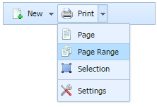

an option of the ButtonSelect:

A new listed option can be added using addListOption method that accepts the following parameters:
myToolbar.addListOption(parentId, id, pos, type, text, img);
Any listed option can be easily removed by calling the following method:
myToolbar.removeListOption(parentId,id);
Related sample: Listed option creation
Any of the listed options can be shown/hidden if one of the following methods is applied to it:
myToolbar.showListOption(parentId, id);
myToolbar.hideListOption(parentId, id);
The user has the possibility to check whether any listed option is visible. The method returns true, if the item is visible:
// returns true/false
var isVisible = myToolbar.isListOptionVisible(parentId, id);
Related sample: Listed option manipulation
Any listed option in the toolbar can be enabled/disabled by user:
myToolbar.enableListOption(parentId, id);
myToolbar.disableListOption(parentId, id);
Also the user has the possibility to check whether any listed option is enabled. This can be done by calling the following method:
// returns true/false
var isEnabled = myToolbar.isListOptionEnabled(parentId, id);
The user should pass parentId and id of the listed option that will be checked. The method returns true if the listed option is enabled.
Related sample: Listed option state
The following methods can be used to set new position for a listed option and to get the current position of it:
myToolbar.setListOptionPosition(parentId, id, pos);
var pos = myToolbar.getListOptionPosition(parentId, id);
Related sample: Listed option position
The user can set the title of any listed option. This item's parentId, id and title's text are passed as parameters to the following method:
myToolbar.setListOptionText(parentId, id, text);
The user can get listed option's title using the getListOptionText method. The method returns the current title text of the item:
// returns current listed option's title text
var text = myToolbar.getListOptionText(parentId, id);
Related sample: Listed option text
A listed option in the toolbar can have its own image displayed in the left part of item's display area. The setListOptionImage method allows the user to set image to a listed Option by passing the following parameters:
myToolbar.setListOptionImage(parentId, id, img);
The path to the current listed option image can be received like this:
// returns path to the current listed option image
var listOptionImage = myToolbar.getListOptionImage(parentId, id);
The image of listed option can be easily removed/cleared by using the clearListOptionImage method to which the user should pass item's parentId and id as parameters:
myToolbar.clearListOptionImage(parentId, id);
Related sample: Listed option image
The user can specify the supplementary information regarding any listed option in the toolbar. The setListOptionToolTip method takes the following parameters:
myToolbar.setListOptionToolTip(parentId, id, tip);
The following method can return tooltip text of the current listed option:
// returns tooltip text of the current listed option
var tip = toolbar.getListOptionToolTip(parentId, id);
Related sample: Listed option tooltip
The user can make any listed option selected by default from script, using setListOptionSelected method. When the user opens the list of options for the first time, this chosen listed option will be highlighted (selected).
The method takes the following parameters:
myToolbar.setListOptionSelected(parentId, id);
This method doesn't make the listed option selected forever. Another listed option can be easily selected by user from the page.
There is also the possibility to get the id of the current selected listed option by the method getListOptionSelected:
//returns id of the selected listed option
var listOptionId = myToolbar.getListOptionSelected(parentId);
As a parameter, you should pass the id of the ButtonSelect, the listed option's id of which you want to get.
The method getAllListOptions allows the user to get all listed options ids of a certain ButtonSelect. The only parameter that the user should pass is the id of the chosen ButtonSelect:
// returns an array of all listed options' ids
var allListOptions = myToolbar.getAllListOptions(parentId);